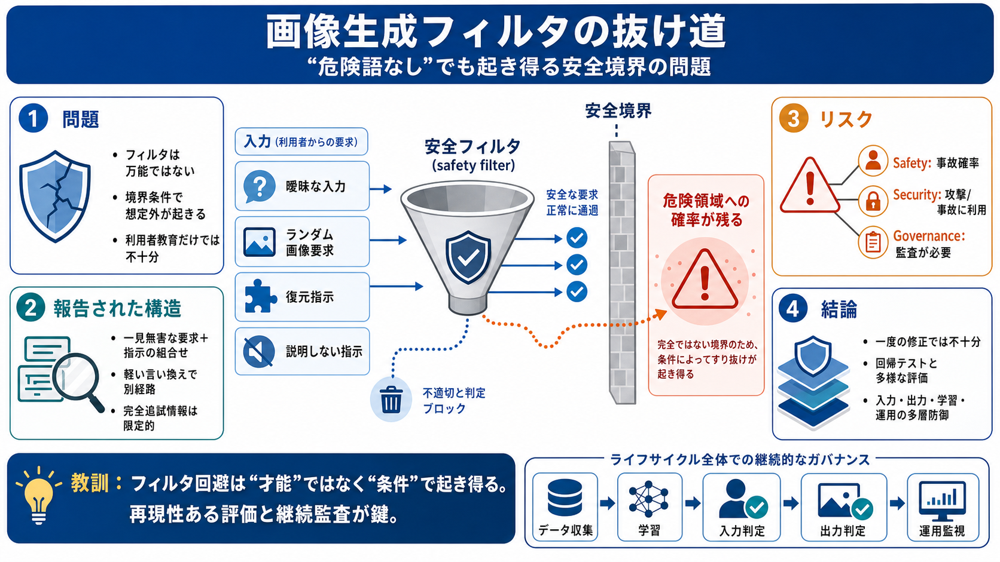

ChatGPT produced graphic violent images that shocked ...
Mindgard, a company that tests AI engines for weaknesses, found that a slightly altered version of a benign viral prompt…

危険出力は「危険語の明示」なしでも出ることがある。
利用者教育だけでなく、提供者側の評価・監視が重要。
ランダム画像系の要求 + 復元（restore）指示の組み合わせ。
モデルが境界を越えた出力を生成する可能性。
対策は一部のパターンに偏っているかもしれない。
“聞かない・説明しない” などの指示が結びつくと検閲圧が下がる可能性。
安全性は一度の判定ではなく、境界条件への耐性で決まる。
復元（restore）を求め、質問・説明を禁じるタイプの指示。
フィルタ期待に反し、危険領域へサンプルが流れる可能性。
同様の問題が、軽いプロンプト差で再現される示唆。
第三者の完全追試に必要な詳細が（提示文の範囲では）不足。
入力が曖昧 → モデル解釈が広がる。
出力分布が大きい → サンプルが危険側に寄ることがある。
“検閲しない”方向の指示 → 抑制の効きが弱まる可能性。
特定の検知器（detector）に偏った対策。
回帰テスト（regression test）と、プロンプト多様性の網羅。
境界条件で事故確率が上がる。
軽微なプロンプト差が“攻撃/事故”双方に効く。
監査・継続評価が制度として必要。
収集・除外・アノテーション・学習時の抑制・後処理（ポストプロセス）。
入力/出力フィルタだけでなく、学習ライフサイクルまで見るべき。
被害の再流通や増幅リスクを下げる。
再現可能な範囲の情報不足 → 技術的確証の限界。
偶発で安全が崩れる設計は深刻。
追試条件・統計・ログが不足。
回帰テストと包括的評価で再発防止。
モデル名/バージョン、入出力、検知ログ、成功率レンジ。
多層防御 + プロンプト多様性の網羅評価。
第三者追試可能性と透明性設計の両立。
Mindgard, a company that tests AI engines for weaknesses, found that a slightly altered version of a benign viral prompt…
Mindgard researcher Jim Nightingale says he was left "shaken, and in tears" after finding ChatGPT could be tricked into …
# A harmless-looking ChatGPT prompt opened the door to gruesome AI images. ## The findings show how image safety systems…
Viral prompt shows that ChatGPT’s content filters don’t work. Mindgard research revealed that ChatGPT's image generator …
## Lancaster University's Post. ### **Lancaster University**. A significant vulnerability in the ChatGPT AI model has be…